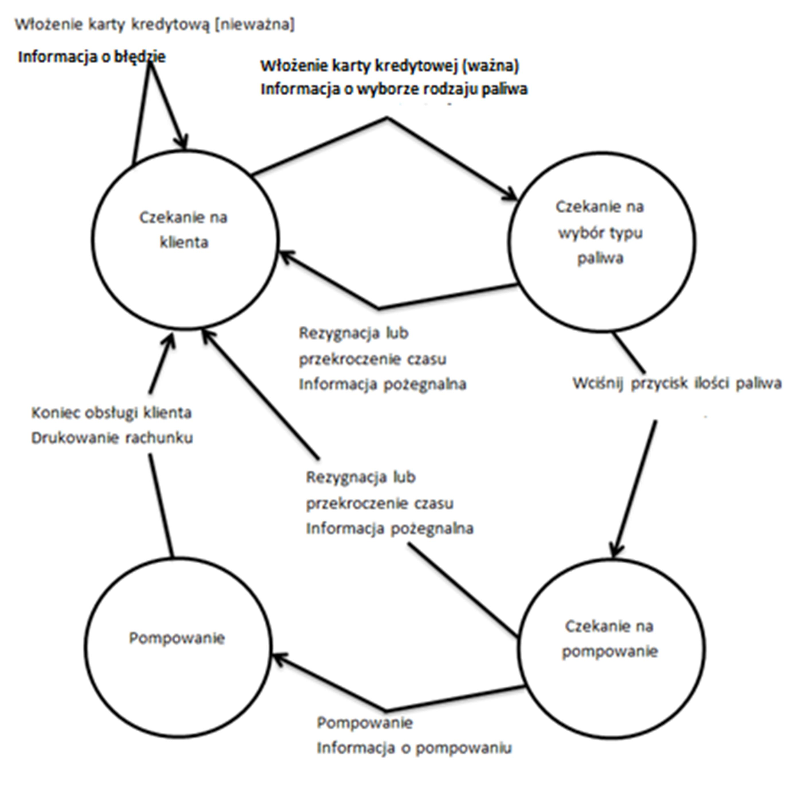

Przeanalizujmy następujący schemat zmian stanów dla pompy benzynowej. Klient korzystający z pompy ma możliwość płacenia za paliwo wyłącznie kartą kredytową:

Załóżmy, że chcesz opracować minimalną liczbę testów, które pokryją każde przejście w diagramie przejść pomiędzy stanami. Załóżmy, że każdy test musi się rozpocząć od stanu początkowego Czekanie na klienta i każdy test kończy się, gdy przejście dojdzie do stanu początkowego.